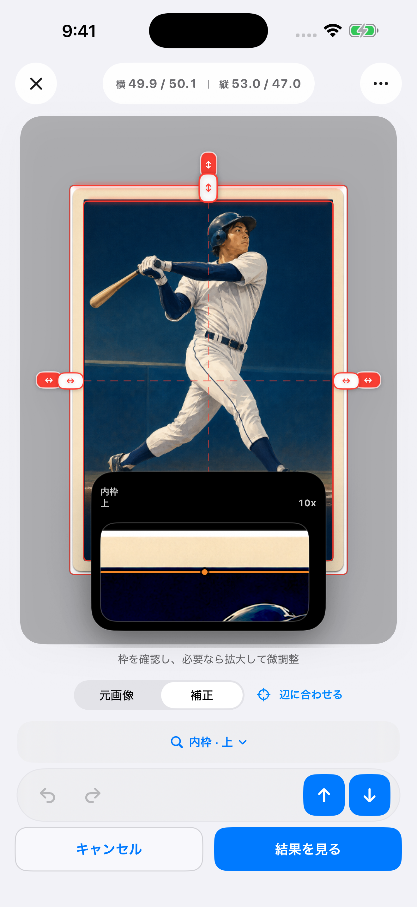

iPhone でカードのセンタリングを測る方法
撮影、外枠と内枠の確認、フォーカス拡大鏡での微調整、保存まで。CenterMint を使った iPhone での測定手順。
1. 測りやすい写真を用意する
模様の少ない、カードと区別しやすい背景に一枚を平らに置きます。四隅をすべて写し、光を均一にして、スマートフォンをカードと平行に構えてください。できるだけ元の写真を読み込みます。写真閲覧画面のスクリーンショットには、黒帯や操作ボタンなど別の枠が含まれることがあります。
スリーブの外周とカード本体の外周は別物です。反射や硬質ケースで境界が見えなければ、まず撮影条件を改善します。
2. 外枠、次に内側の基準線を確認する
CenterMint で撮影または写真を読み込みます。外枠は背景やスリーブを含めず、カード本体の外周に合わせます。次に余白と印刷面の境界を確認してください。文字欄や絵の途中の強い線へ飛ばず、四辺で同じ基準を追います。
透視補正は斜めの見え方を整えますが、反射で隠れた境界を復元するものではありません。カードの縦横比は候補探しの手掛かりであり、余白が等しい証拠ではありません。
3. フォーカス拡大鏡で一辺ずつ微調整する
動かす辺を選び、フォーカス拡大鏡で画素を見ながら調整します。鮮明化された表示で迷う場合は元画像も確認してください。実際に偏っているカードもあるので、数値を無理に 50/50 に合わせません。

4. 比較できる形で保存する
左右と上下を別々に確認して保存します。表裏を比較する場合は、それぞれ別の写真で測り、同じカードだと分かるように記録します。後の測定値が違うときは、同じ基準線を使ったか見直してください。
たとえば左 3 mm、右 2 mm なら 60/40 です。別の写真で 50/50 と出ても、カードが変わったとは限りません。切り抜き、遠近の歪み、選んだ内枠を比較します。
分かること、分からないこと
センタリングは状態の一要素です。表面の傷、角、真贋や総合的な鑑定点数は判定しません。表裏やカードの分類で条件が異なるため、PSA と CGC の公式基準を確認してください。
認識は端末内で処理します。任意の修正共有を有効にすると、以降の対象となる手動修正画像と枠データが自動送信されます。共有の初期状態はオフです。詳しくは プライバシーポリシーをご覧ください。